What's the big deal with Linux? Why do people like it so much? Because it's COOOOOOL! You can do literally anything you want to your Linux system! Companies like Microsoft and Apple that make Windows PCs and MacBook computers hide a lot of the code that is used to run YOUR machine. This isn't right! If YOU own the computer, YOU should be able to see how it works! If you stick with programming, one day you'll see how cool this is.
So what is Linux? Linux is a type of operating system, and there are THOUSANDS of Linux operating systems called 'distros' (distributions). Basically, anyone can write their own Linux operating system, it just needs to use the Linux Kernel to be called a Linux operating system. The Kernel is basically the 'engine' of the computer. Don't worry about that. The operating system you're using right now is the most popular Linux operating system called Ubuntu. I love Ubuntu. I also like Mint, ElementaryOS, and Kali (for my hacking stuff). Get some more USBs and download more Linux distros to see which ones you like!
The main way that Linux users interact with their computer is through the terminal. The terminal is such an important tool for creating, modifying, and managing files, doing programming stuff, getting information about the system, and literally anything else you can imagine. On Ubuntu, you can always quickly open a terminal window by pressing Ctrl-Alt-T. You'll see a blinking cursor at a prompt waiting for commands.
Let's start looking at some commands!
How to Access Your Linux OS
In order to load your new Linux operating system, you will need to plug in the usb drive to a usb port on your computer. Next, you will need to restart the computer, and just after it restarts (before it loads Windows), keep pressing whichever F key it says for the 'boot options.' Every computer is different for this part. When I restart my laptop, I need to keep pressing F2 for it to bring up the boot options, but other laptops use F12 or F7. Google your laptop brand and model to find out which key to use for this part.
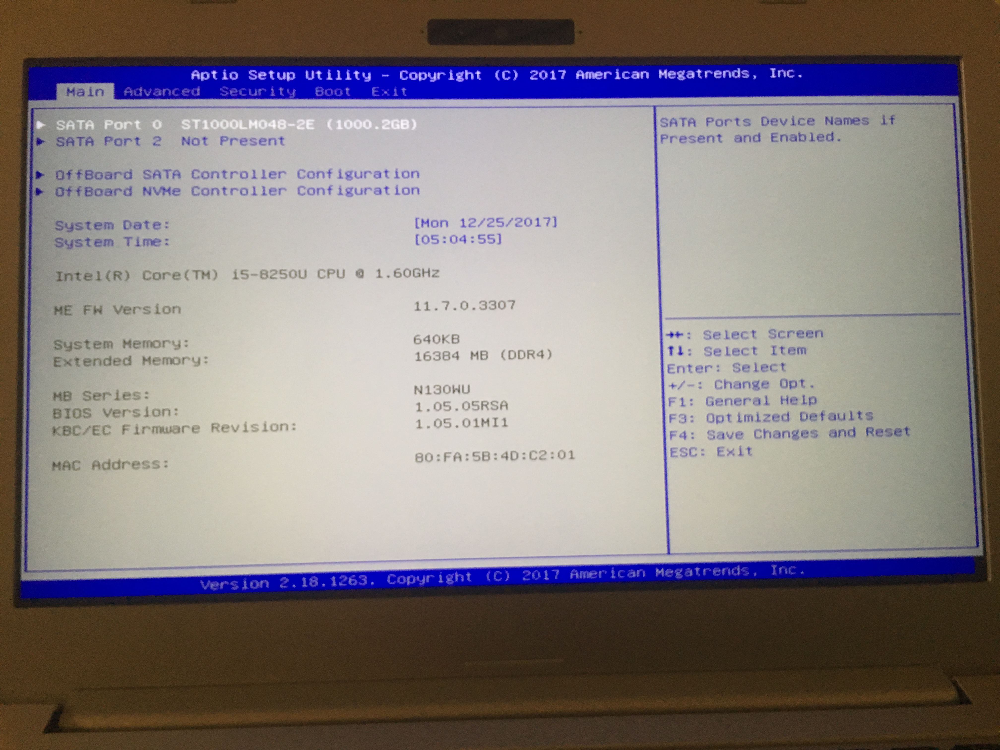
This is called the BIOS which is the application that tells the computer which hard drive to boot from.
Every BIOS looks different but does the same job. In order to change which device to boot from, I use the arrow keys to go right to the 'Exit' tab and select the 'Samsung Flash Drive Partition #3'
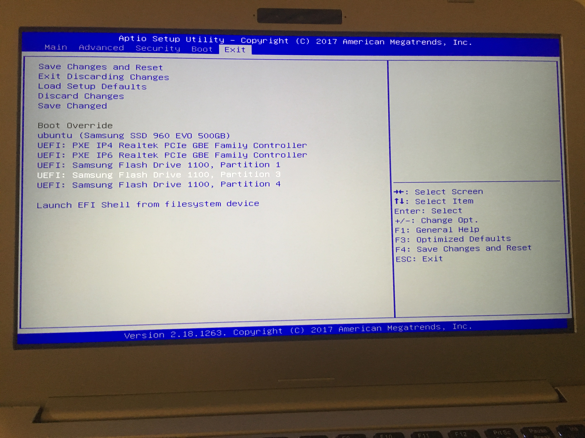
After that, the computer wants to know which version of Ubuntu to run. Always choose 'persistent live.'
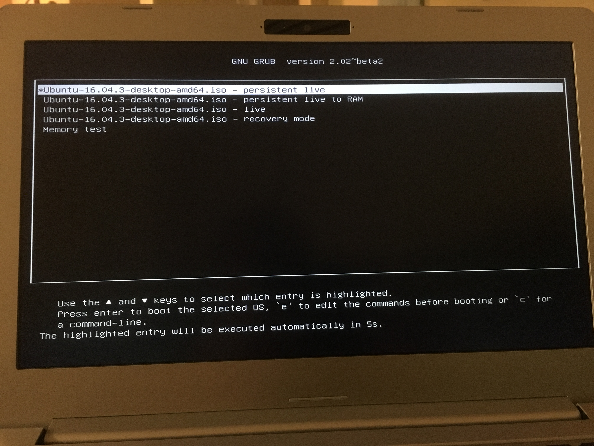
After that, Ubuntu Linux will start loading. Give it a minute or two, then you should see the desktop. Mission Accomplished!
The Terminal
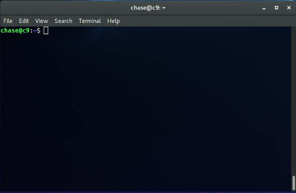
The terminal is the program we use to access the Linux file system. Using it, we can do practically anything! The part on the left of the @ symbol is the name of the user, and on the right is the name of the system. After the colon is the file path which shows where you are on the system. The dollar sign is always at the end, and you put in your commands after it.
Here's a few cool commands that make use of the terminal. But before we get to the commands, we need to learn some new words:
directory - A directory is basically a folder. Directories hold files and even other directories. They're just a way of organizing things.
home (or home directory) - The home directory is the place where you (the user) begin to store your files. The '~' symbol by the dollar sign is the home symbol. Each user gets their own home directory, so if you both made your own seperate user accounts then Christian would have a home directory that is different from Dawson's.
root (or root directory) - The root directory is the place where the system stores its system files. To go to root, type 'cd /' (we'll go over this more later) but keep in mind that there is NO reason to move or delete root level files.
Navigating the file system using the terminal can be scary at first, but really you just use the same commands over and over. Open up a terminal window with Ctrl-Alt-T and run these commands with me!
echo - prints stuff to the screen. See how everything that comes after 'echo' shows up on the next line? That's the output. This one isn't important when it comes to navigating the file system, I just wanted to show y'all a cool first command. After that line is printed, the terminal waits for another command!
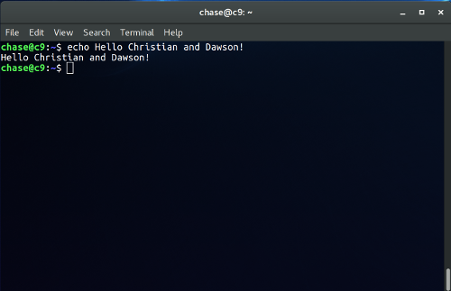
pwd - this stands for 'print working directory.' This will show you where are on your file system. The first '/' on the left is called 'root' and then every other slash after is kind of like an arrow that points to the next directory. Here's what you're seeing from left to right: First off we are in root (the first slash) then we go to the home directory, then ubuntu Documents, then PythonForKids, then finished_projects.
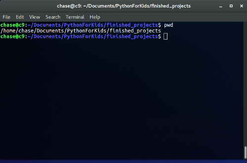
ls (that's a lower case L)- this lists all of the contents of the directory you are in. ls is super important for you to decide where to go. Before you go anywhere, you need to see where you can go! In the example below, you see the contents of the home directory: Applications, Documents, Desktop and more are all directories and are colored blue. The 'examples.desktop' thing is a file that contains important info about the desktop setup, but it's not important right now. We can switch over into the blue things, the directories. So let's look at that next!
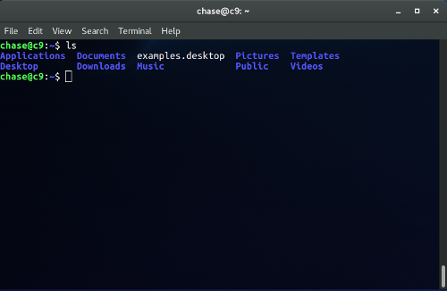
cd - this means 'change directory.' This command is how you actually move around in your file system. In the example below I listed the contents of the home directory with 'ls' then decided I wanted to go to Documents so I typed 'cd Documents'. Once I was in Documents I listed the contents of that directory. Typeing 'cd' without a name of a directory will take you back to your home directory. So you can see this can go on and on as long as there are directories to go to. Let's look at how to make directories next.
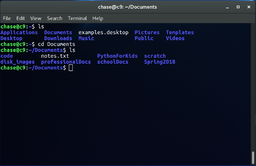
mkdir - this means "make directory" and it does exactly what it says. It makes an empty directory that you can 'cd' into. See how I made the ZebraFacts directory? I listed what's in home first, then made ZebraFacts, listed again and BAM it's there! One thing: we Linux programmers try not to put spaces in our directory names. Things like mkdir will see the spaces in the name and treat it as seperate directories. So 'mkdir Zebra Facts' would make two directories: Zebra and Facts.
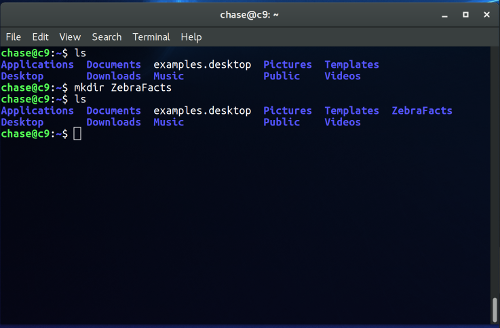
mv - this is the move command. This is how you move files and directories around. The way it works is that the first thing you type is the thing to move, then the next thing is where to put it. Once mv is done, the thing is no longer going to be where you moved it from. See here I had this file called 'BoringEnglishPaper.txt' in my home directory but I wanted to put it in my Documents directory. I used mv to put it in Documents.
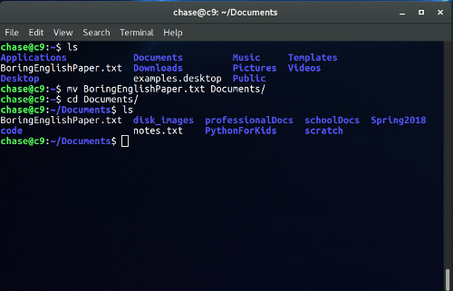
cp - this is the copy command. It does almost the same thing as mv except it keeps the original thing where it was and just puts a copy in the destination directory.
rm - this is the remove command. This is how you delete files or directories. In this example I decided that my english paper (BoringEnglishPaper.txt) is so bad I just want to delete it. First you see it's there in Documents, then I did rm on it and deleted it. You know it's gone because you don't see it anymore after doing 'ls' again.
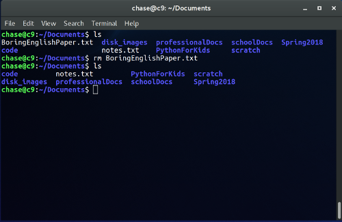
cat - this is the concatenate command. It's supposed to be used for some other reason, but most programmers use it to quickly see the contents of a file. It's really useful for files that are human readable like .txt files.
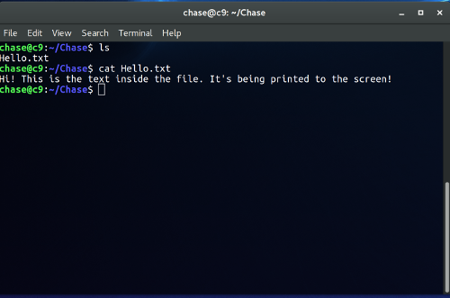
One final thing that will make working with the terminal easier is that you can press the Tab key to auto complete file or directory names. For example, if I wanna do 'cd Documents' I could type all of that, or I can type 'cd Doc' then hit Tab and it would fill in the rest.
Useful Programs
Sublime Text - This is where you're going to be writing code! I looooove Sublime Text because it is so simple to use. I even wrote this webpage in Sublime Text!
Firefox - This is the web browser that Linux uses. Firefox is great because it isn't too heavy on the system. Use Firefox to surf the web and do anything you would normally do on the Internet.
Discord - This is a program that allows you to do video and voice calling from your computer. If you ever run into a problem and you want to ask me for help, try calling me on Discord. I set up Discord and added me as a contact. The cool thing about Discord is you can use video calling and show the other person what you are seeing on your screen. This makes it easy to help 'debug' (find what's wrong) with the code.
How to Get Started With Python For Kids
I made directories for Christian and Dawson in the home directory. When in home, type 'ls' and you should see them. If you 'cd' into them you'll see a 'my_code' directory where you can put the code you write when following along with the book. There's also a directory in home called 'PythonForKids' which has solutions and finished code. It also has the images for this website, so don't delete or move them!
Tips and Tricks
Linux offers a lot of cool little tricks.
When in the terminal, pressing Ctrl-c immediately stops any process from running.
Drag the title bar of any application to the right or left side to "snap" it to that side. This is useful when you want to see two things at once, you can snap one thing to the left and snap the other thing to the right.
Don't forget to check for updates every so often with the following two commands: sudo apt-get update then sudo apt-get upgrade. The first command updates all of the 'repositories' which are the places where the update code is kept, but this won't actually upgrade the system. Upgrading is done with the second command. * 'sudo' is the keyword that tells the computer "I am the super user of this system and I'm forcing you to do this command." Without it, the computer might not think you're important enough to do the command.
Click the icon on the top left to search the computer for any application. I use this all the time! You can even use the 'Windows' key to do it too.
Well, I hope y'all enjoy Linux and programming! If you start now and keep up with it, you'll be coding masters in no time!